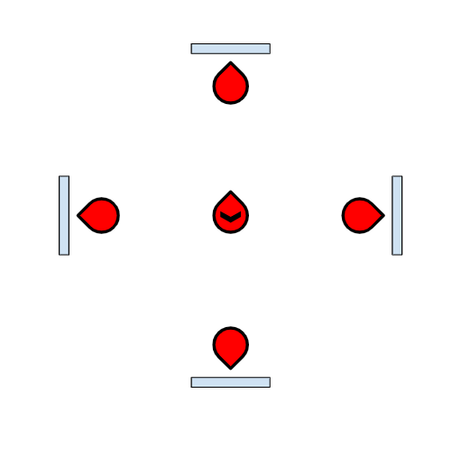
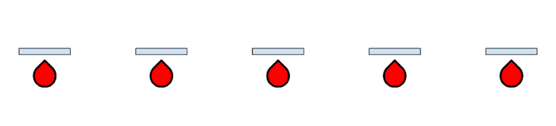
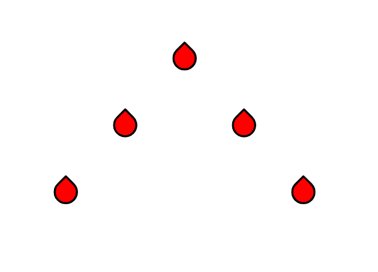
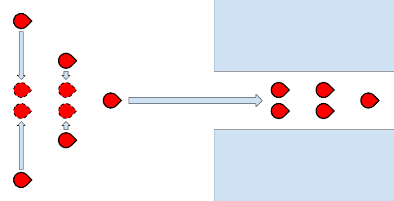
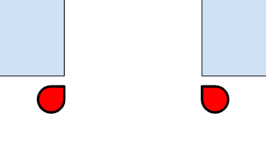
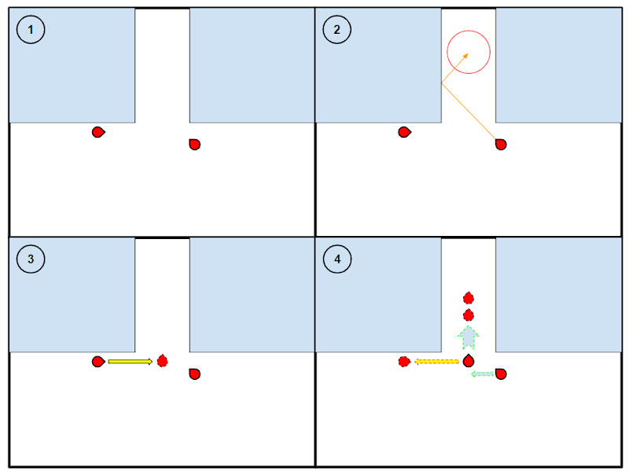
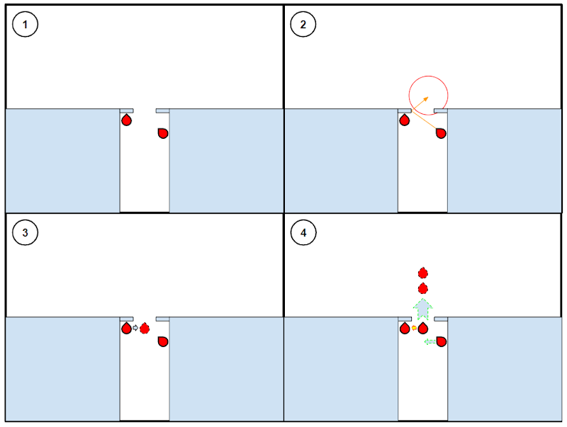
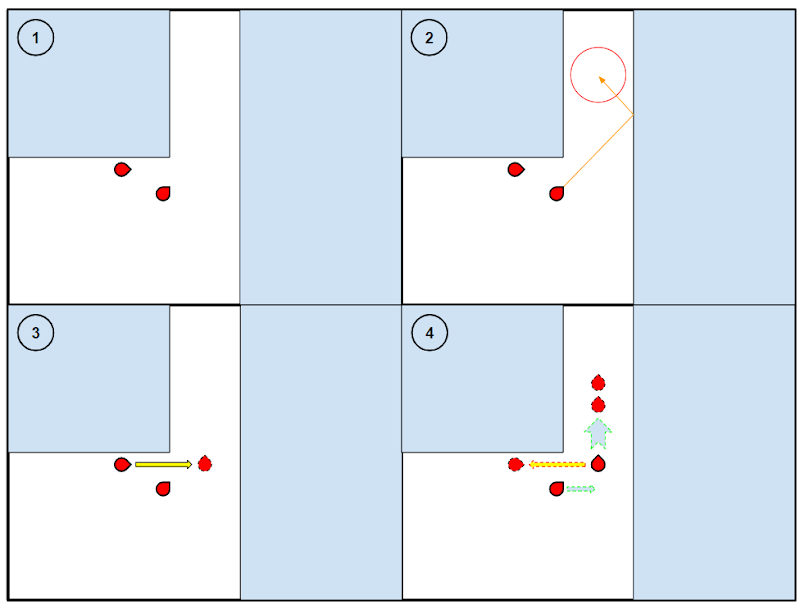

Formations
General Information
Regardless of the specific formation, troopers should be comfortable rolling and moving around to avoid grenades and enemy fire. The formations are flexible guidelines to encourage troopers to remain in roughly the correct area, not stringent templates to be followed to the letter. Troopers should adapt these guidelines to the context of the situation and terrain using their own initiative.
Some of the formations make exceptions for specific classes. These exceptions only apply at the behest of the squad CO.
Regroup
“Regroup at [position]”
Troopers should drop whatever they are doing and move as fast as possible to the designated regroup position. Once there, they should form an All-Round Defense (ARD), as shown below, ensuring they remain in cover where possible. Supports and COs may remain in the center of the ARD in order to coordinate the team or provide medical assistance to injured troopers.

Baseline
“Baseline” or “Baseline at [position]”
Troopers should form a line a) on either side of the CO or b) at the specified position. They should attempt to crouch in cover and ensure they have around 5m between them and the next trooper along (the inner circle on the RADAR). This ensures that any grenades thrown at the baseline will not kill more than one trooper at a time. Medics, Specialists and COs may remain behind the baseline.

Once in a baseline, the commands “Push” and “Withdraw” may be used to move the baseline forwards and backwards respectively. When told to “Push”, troopers should move out of cover and begin to sprint forwards, maintaining their 5m spacings where possible. When told to “Withdraw”, troopers should walk slowly backwards while firing forwards continually to provide covering fire. Should an officer class utilizing the squad shield be present during the withdrawal, they should place the shield down to block shots whilst the rest of the unit makes a more hasty retreat.
Arrowhead
“Arrowhead on me” or “Arrowhead on [Trooper].”
Troopers should form an arrowhead shape (as shown below) with a) the CO or b) the specified trooper at the front. Then, they will be told to move to a given position, normally a command post. While moving to said position, they should sprint forwards, following the terrain and firing at any enemies they encounter. Troopers should keep in mind that they may be asked to throw grenades or utilize other abilities upon reaching the position that they are attacking.

While moving in an arrowhead formation, a team may come across a corridor, cave or other passageway too narrow for the arrowhead to fit through. If this occurs, troopers should squeeze into the center of the formation as shown below.

Defend Doorway
“[Trooper] and [Trooper], defend [doorway]”
The specified troopers should crouch on either side of the doorway, ensuring that they use the door frame as cover. They should look through the doorway diagonally so that they can nevertheless cover all angles.

Breach Doorway
“[Trooper] and [Trooper], breach [doorway]”
The specified troopers should decide between themselves which will act as the ‘support’ and the ‘pointman’. In the diagrams below, the pointman starts on the left and the supportstarts on the right. The pointman should remain pressed against the wall but move away from the doorway, while the support should move away from the wall, as shown in step 1. They should then activate any abilities they need.
Once the troopers are in position, the CO will say the word “Breach”. At this point, the support should throw a grenade diagonally into the doorway such that it bounces into the center of the corridor or room beyond, as shown in step 2. All Base Classes have access to a grenade that can bounce in this way.
When said grenade explodes, the pointman then begins step 3, as they roll across into the doorway and begin to fire at any enemy contacts while assessing the situation. This is the reason that they moved away from the doorway during step 1, as it prevents them from overshooting the doorway. Cases where it is not possible to move far enough to the left to avoid overshooting are discussed further down.
Once the pointman has assessed the situation they then commence step 4. Here, if there is a reasonable number of enemies defending the doorway, they should follow the green arrows, pushing through the doorway while the support follows them up. Otherwise, they should follow the red arrow, rolling back into the cover of the doorframe.

In the case that it is not possible for the pointman to move far enough to avoid overshooting the doorway, for example because they are breaching out of a corridor, they should follow the alternative steps below. These are similar to the above steps, however the pointman simply walks into the doorway instead of rolling.

Clear Corner
“[Trooper] and [Trooper], clear [corner]”
This command is an alternative to the Breach Doorway command for use with corners, the main distinction being that the support begins on the same side as the pointman.
